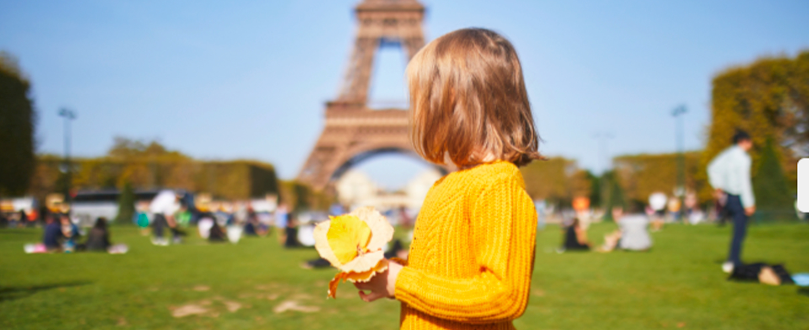

🐾 ¡Exploradores, atentos! 🧭
Hoy vamos a visitar un lugar lleno de césped, flores y secretos escondidos… ¡el famoso Champ de Mars! 🌼🌳 Este parque está justo a los pies de la Torre Eiffel 🗼, y es tan largo que parece que no se acaba nunca. ¡Prepárate para correr, saltar, reír y soñar en uno de los rincones más bonitos de París! 😄💨
📜 ¿De dónde viene ese nombre tan raro? 📜
Hace muuuchos años, aquí venían los soldados a entrenar. Por eso se llama como el dios Marte, el dios romano de la guerra 🛡️. Pero no te preocupes, ahora ya no hay batallas... ¡solo guerra de cosquillas y carreras de risa! 🤪💥
🎯 Misión #1: ¡Buscar el mejor sitio para picnic! 🥖🍓
El parque tiene un montón de zonas verdes donde puedes sentarte con tu manta, sacar tu zumito y compartir unas galletas mágicas. 🍪 ¡A veces hasta hay músicos tocando o niños lanzando pompas de jabón! ¿Y si inventamos un baile para celebrarlo? 💃
📸 Misión #2: ¡Cazadores de fotos épicas! 📸
¿Sabías que desde aquí puedes sacar unas fotos espectaculares de la Torre Eiffel? Intenta hacerlo tumbado sobre la hierba, o saltando muy alto para que parezca que estás tocando la punta. ¡A ver quién consigue la más divertida! 📷🏆
🎡 Misión #3: ¡Corre, juega, vuela! 🎡
- 🌈 Carreras invisibles: Corre como si fueras un unicornio, una nave espacial o un dragón de caramelo. 🐉
- 🌻 La caza del trébol: Busca una hoja curiosa, una piedra mágica o una flor que te dé superpoderes. 🔮
- 💤 Descanso encantado: Túmbate en el césped y escucha los sonidos de París… ¿es una paloma o un hada bostezando? 😴
🌌 Cuando se encienden las estrellas... 🌠
Al anochecer, la Torre Eiffel se ilumina y comienza a parpadear como si guiñara un ojo. ¡Es el momento ideal para desear algo bonito! 🎇 Cierra los ojos, aprieta fuerte tus manos y pide un deseo en secreto. París lo guardará para ti 💖
💡 Dato curioso final:
En 1889, durante una gran feria mundial, la Torre Eiffel se construyó justo aquí. ¿Y sabes qué? ¡Muchos parisinos no querían que se quedara! 😱 Menos mal que no la quitaron, porque ahora es el abrazo de luz más famoso del mundo.
